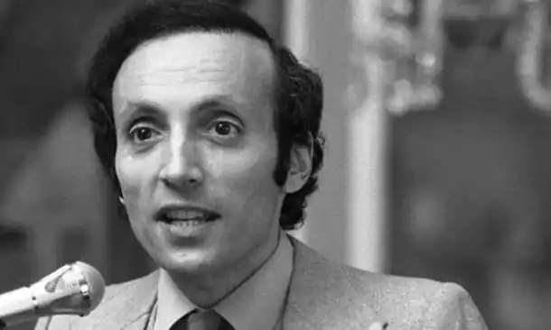

День народження: 16.06.1937 року
Місце народження: Бруклін, Нью-Йорк, США
Дата смерті: 17.01.2010 року Американський письменник і сценарист. Ерік Сігал був професором античної літератури в Гарварді, Єлі і Прінстоні, поєднуючи викладання з написанням кіносценаріїв. Сігал, зокрема, був автором сценарію для фільму "Жовтий підводний човен" ("Yellow Submarine", 1968 рік) групи The Beatles. В кінці 1960-х років Сігал написав повість про кохання студента Гарварду і студентки Редкліффа, вмираючої у фіналі від раку. Повість Сігала не викликала інтересу видавців, і літературний агент автора запропонував йому написати на її основі сценарій, який придбала кіностудія Paramount Pictures. Фільм "Історія кохання" за сценарієм Сігала вийшов на екрани в 1970 році. Картина, головні ролі в якій зіграли Райан о'ніл (Ryan O Neal) і Елі Макгроу (Ali MacGraw), була номінована на сім премій "Оскар", у тому числі і за кращий сценарій, проте отримала лише одну нагороду — за музику. "Історія кохання" з моменту її виходу на екрани регулярно включається в списки найбільш романтичних фільмів. Після того, як були розпочаті зйомки фільму, кіностудія Paramount Pictures запропонувала Сігалу переробити сценарій назад у повість. Книга "Історія кохання", що надійшла в продаж до прем'єри фільму, стала бестселером в США і була переведена на 33 мови. В 1977 році було видано продовження "Історії кохання" — "Історія Олівера" (oliver's Story), яка також була екранізована.